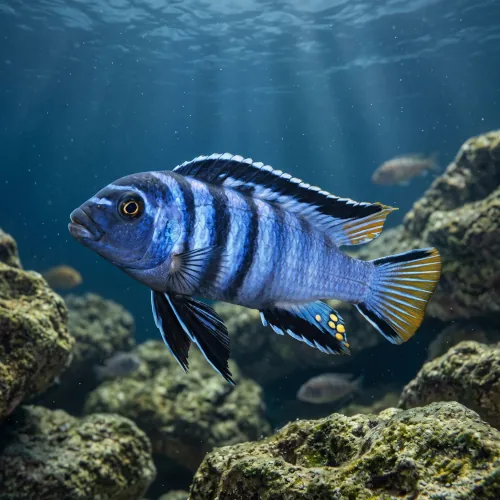

Nome popular principal
Pseudotropheus Elongatus
Pseudotropheus Elongatus, Ciclídeo Elongatus, Mbuna Elongatus
Ficha de peixe
Ciclídeos Africanos
Um Mbuna de corpo alongado e perfil esguio que encanta por suas barras azuis reluzentes em aquários rochosos.

Nome popular principal
Pseudotropheus Elongatus, Ciclídeo Elongatus, Mbuna Elongatus
Nome científico
Nome técnico essencial para taxonomia, cruzamento de manejo e referência editorial consistente.
Dificuldade de manejo
Use este nível como referência inicial, sempre considerando volume, estabilidade e compatibilidade do aquário.
Seção 1
Seção 2
Seções 4 a 6
Pseudotropheus Elongatus tem hábito alimentar herbívoro. Excelente. 1 a 2 vezes ao dia em pequenas porções. Alimenta-se predominantemente de rações vegetais ricas em spirulina para evitar o inchaço intestinal (Malawi Bloat), devendo evitar alimentos proteicos gordurosos.
Machos exibem cores azul-escuras ou roxas mais vibrantes e ocelos evidentes na nadadeira anal; fêmeas são menores e de tons mais opacos. Tipo de reprodução: Ovíparo. Dificuldade de reprodução: Fácil. Espécie incubadora bucal na qual a fêmea recolhe os ovos fertilizados e os protege na boca por aproximadamente 3 semanas.
Baixa. Substrato recomendado: Areia de aragonita ou areia fina de quartzo com grandes formações de pedras. Necessidade de esconderijos: Alta. Exige um aquário rico em estruturas de rochas empilhadas até a superfície para criar territórios e refúgios seguros.
Seção 7
Necessita de água dura e alcalina com boa filtragem e trocas parciais regulares para manter a imunidade e coloração.
Seção 8
Sim, possui comportamento bastante territorialista, especialmente entre machos da mesma espécie e peixes com cores parecidas.
A dieta deve ser baseada em rações vegetais de alta qualidade com spirulina, prevenindo problemas digestivos graves.
Como nativo do Lago Malawi, requer água alcalina e dura com PH entre 7.8 e 8.6.